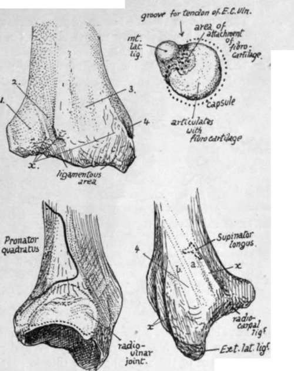
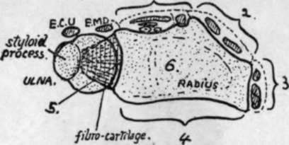

Radius. Continued
Description
This section is from the book "The Anatomy Of The Human Skeleton", by J. Ernest Frazer. Also available from Amazon: The anatomy of the human skeleton.
Radius. Continued
The outer aspect of the radius is covered by Supinator brevis in its upper half, then by the tendon of Pronator teres, and below this by the radial extensor and Supinator longus tendons which have passed down over the Supinator brevis and Pronator tendon. These are shown in Fig. 79. At the lower end of the radius the mass that ends in the styloid process projects outwards, nearer the front than the back of the bone, so that the outer surface now becomes posteroexternal, while a new outer surface is made on the prominent mass. Thus the Radial Extensor tendons come to lie in the postero-external groove on the lower end, while the deep muscles which have crossed them he on the new outer surface, further out and further forward. The tendon of Supinator longus, which is rather in front of the two radial extensors in the marginal group, runs into the base of the projecting mass, spreading out a httle and making a definite secondary mark on the bone : it is partly crossed here by Ext. ossis met., but not by the tendon of Ext. brevis pollicis. Each of these two surfaces on the lower end contains in its groove a synovial sheath for its twc tendons.
Fig. 80.-The upper right figure is of the head of the ulna seen from below. The others are of the lower end of the radius from behind, from the inner side, and from the outer side, i, groove for Ext. comm. dig., Ext. indicis, ant. inteross. artery and post inteross. nerve ; 2, for Ext. sec. internod. (longus poll.) ; 3, for radial extensors; 4, for Ext. oss. metacarpi (a) and Ext. primi internod. (brevis' pollicis) (6). x marks attachment of posterior annular ligament. On the inner side the dotted line shows the extent of the synovial cavity ; this goes up to the insertion of Pronator quadratus above but does not reach the margin below because the triangular cartilage is attached here. On the outer side notice the insertion of Supinator longus partly covered by tendon of Ext. ossis metacarpi pollicis.
The posterior surface has an obhque narrow groove for the tendon of Ext. longus pollicis, and a broad shallow groove that has in it the anterior interosseous artery and posterior interosseous nerve, covered by Ext. indicis and Ext. communis tendons. The obhque groove has a prominent outer margin separating it from the posteroexternal surface and ending below in a bony " pulley," on which the tendon turns more outwards as it leaves the radius to pass to the thumb.
Fig. 81 is a diagram of the six surfaces on the lower end of the radius.
The posterior annular hgament is attached to the bony ridges that separate these grooves and holds the tendons in place. The triangular fibro-cartilage has its base attached to the inner and lower margin of the lower end of the radius and thus connects it with the ulna and separates the articular surface of the sigmoid notch from that of the lower or carpal aspect.
The concave carpal articular surface has a ridge running across it from before backwards : this divides it into an outer area for the scaphoid and an inner for the semilunar bone. The outer area is triangular and extends on to the inner surface of the styloid process : the inner does not cover the whole surface of the semilunar, for this is partly in contact with the fibro-cartilage, but in adduction of the hand the semilunar moves under the radius.
The attachments of hgaments, etc., on the lower end are shown in Fig. 80. The female bone is said to exhibit a comparatively greater curve than the male bone : otherwise the sexual differences are merely general.
The head of the radius can be felt in the hollow below the external condyle, where, covered only by ligamentous and aponeurotic structures, it can be recognised by the finger on rotating the forearm : examine it here, and note its changing relation to the condyle as the elbow is bent. The muscular mass of Anconeus hes between it and the olecranon. The tubercle can be felt in thin arms just below the head when the forearm is weU pronated. The upper part of the shaft of the bone is not easily followed in a well-developed limb, but the lower half can be palpated indirectly on its outer aspect, back and front. The lower end can be felt through and between the tendons behind, externally, and to some extent in front. Notice the level of the styloid process, lower than the posterior border and situated behind the tendons going to the base of the thumb.
Ossification of bones of forearm.
The bones are laid down in cartilage in which shaft centres appear during the seventh week, that for the radius a few days before the ulnar centre.
Fig. 81.-Scheme to show the six surfaces on the lower end of the radius. These are : 1, posterior; 2, postero-external; 3, external ; 4, anterior; 5, internal, articular for ulna ; 6, inferior, articular for carpus. Compare with Fig. 80. Extensor tendons lie on surfaces 1, 2, and 3, and also over the radio-ulnar joint (Ext. min. dig.) and ulna (Ext. carpi ulnaris).
At birth the ends of the bones are cartilaginous, and also the tubercle of the radius : the coronoid process has been formed as part of the shaft of the ulna.
The additional epiphysial centres appear first in the radius, perhaps on account of it being the direct supporting bone for the hand.
The " growing ends " are distal, and in these centres appear, in the radius early in the second year, and in the ulna about the sixth or seventh year. They unite with the shaft between eighteen and twenty-one, the ulnar head joining a year or two before the lower end of the radius.
The upper ends begin to ossify, in the radius about the sixth year, and in the ulna during the tenth year, and unite between seventeen and twenty, the ulnar fusion again preceding that in the radius.
The centre for the radial tubercle appears about twenty and joins a few years later. There is frequently an additional centre for the tip of the olecranon : observe in the figure that the olecranon centres do not correspond with the whole of the descriptive process (Fig. 78).
Occasional centres have been described for the two styloid processes. The centre in the head of the radius has been said to be formed by the junction of several small ones, but this is probably not a correct interpretation of the observations.
The above account can be taken as representing the normal history of ossification in the male, but for the female there seems to be a marked modification in the direction of earlier appearance of epiphysial centres at the growing ends of the bones : thus in the radius the lower centre is found six months earlier than in the male, while that in the ulna is a year earlier.
Continue to:
- prev: Radius
- Table of Contents
- next: Hand